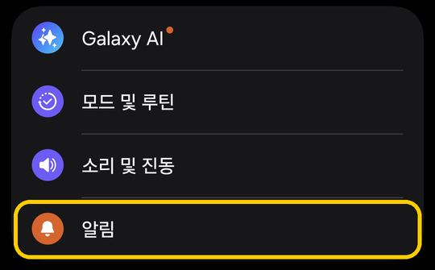
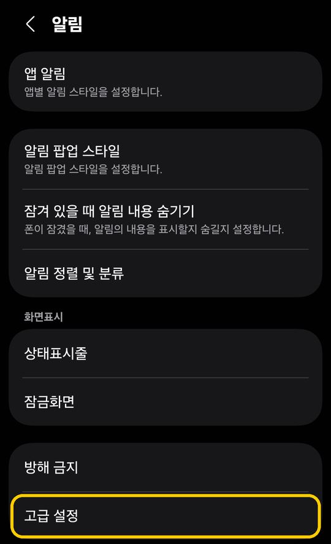
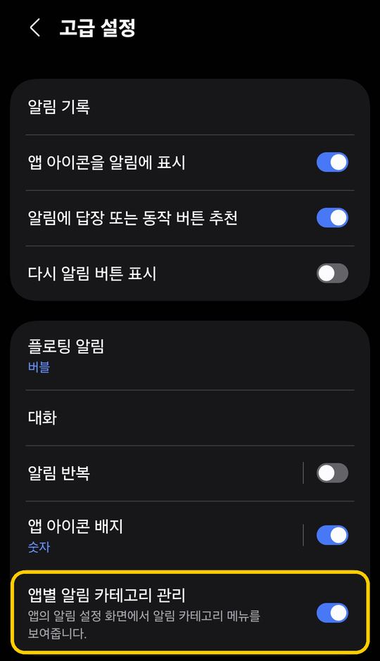
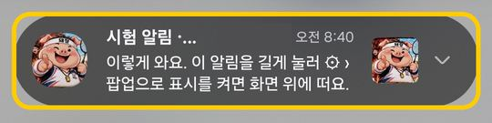
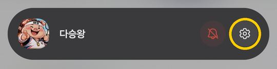
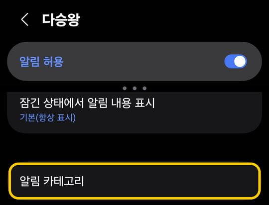
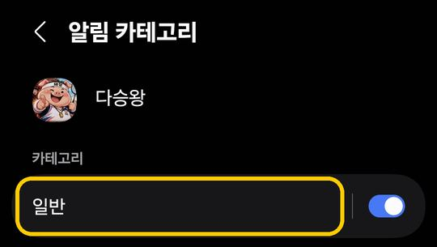
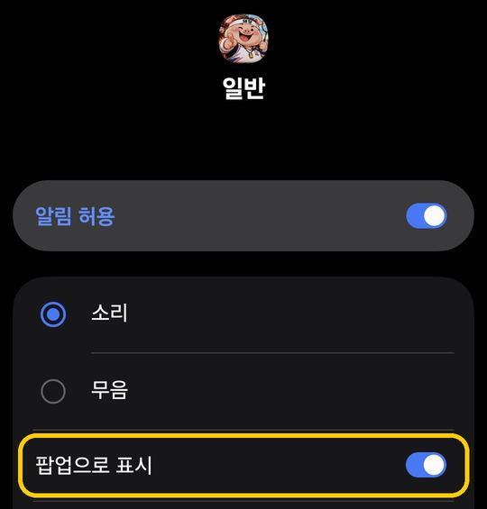

알림이 와도 알림창을 내려야만 보이면 이 설정이 꺼져 있는 거예요. 갤럭시는 웹 앱 알림을 처음에 '팝업 없이' 만들어서, 직접 한 번 켜 줘야 해요.
먼저 앱 이번 주 › 내 경기에서 알림 받기를 켜 두세요.
먼저 앱 이번 주 › 내 경기에서 알림 받기를 켜 두세요.
파트 1 · 휴대폰 설정
1번만 · 30초숨어 있는 '알림 카테고리' 메뉴를 보이게 하는 단계예요.
1휴대폰 설정 앱을 열고 알림을 눌러요

2맨 아래 고급 설정을 눌러요

3앱별 알림 카테고리 관리를 켜요
이미 파랗게 켜져 있으면 그대로 두고 파트 2로 가요.

파트 2 · 다승왕 알림 설정
1번만 · 1분다승왕 알림에 '팝업으로 표시'를 켜는 단계예요.
1앱에서 시험 알림 보내기를 눌러요
이번 주 › 내 경기 맨 위 🔔 코트 알림 카드에 있어요. 알림을 막 켰다면 시험 알림이 이미 와 있어요.
2알림창을 내려서 시험 알림을 길게 눌러요

3오른쪽 ⚙ 톱니바퀴를 눌러요
빨간 종(알림 끄기)은 누르지 마세요.

4맨 아래 알림 카테고리를 눌러요

5일반 글자를 눌러요
오른쪽 스위치 말고 왼쪽 '일반' 글자를 눌러야 다음 화면이 열려요.

6소리를 고르고 팝업으로 표시를 켜요
'무음'이면 팝업이 안 떠요.

✓앱으로 돌아가 시험 알림 보내기를 한 번 더 눌러요
화면 맨 위에 잠깐 내려오면 끝이에요. 다른 앱을 보고 있을 때도 떠요.
안 될 때
- 고급 설정에 '앱별 알림 카테고리 관리'가 없어요
- 휴대폰 버전에 따라 없는 경우가 있어요. 파트 1은 건너뛰고 파트 2로 가면 돼요.
- ⚙를 눌렀는데 '알림 카테고리'가 안 보여요
- 파트 1의 스위치가 꺼져 있는 거예요. 파트 1을 다시 해 주세요.
- 시험 알림이 아예 안 와요
- 앱에서 알림 받기가 켜져 있는지 확인하고, 방해 금지 모드가 켜져 있으면 꺼 주세요.
- 아이폰은요?
- 설정 › 알림 › 다승왕전 › 알림 스타일을 배너로 골라요. 아이폰은 홈 화면에 추가한 앱에서만 알림이 와요.